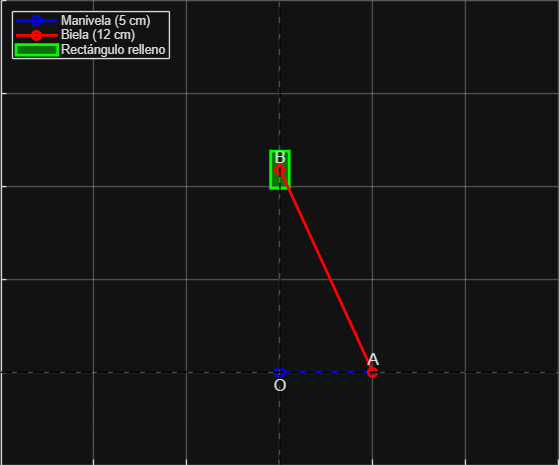

Creado por: David Quiñones Angarita y Juan Sebastian Baquero Piraquive
Este proyecto universitario se enfoca en el análisis cinemático de un mecanismo de cuatro barras con manivela y corredera vertical. El objetivo principal es estudiar el desplazamiento de la pieza “d” de la corredera, identificando los valores máximos y mínimos que puede alcanzar dentro de su ciclo de movimiento.
Se aplican dos enfoques complementarios: el método gráfico y el método analítico. Primero, se determina el intervalo de recorrido posible para la corredera usando el método gráfico. Luego, se valida y profundiza el análisis mediante el método analítico, resolviendo ecuaciones trigonométricas para calcular ángulos y posiciones.
Además, con un mismo valor del ángulo de entrada, se exploran las dos configuraciones físicamente posibles del mecanismo y se calculan para cada caso los ángulos y desplazamientos correspondientes, mostrando cómo un solo valor de entrada puede aportar soluciones múltiples. El análisis completo aporta criterios de diseño y comprensión del comportamiento de mecanismos de cuatro barras en aplicaciones reales.
A continuación se presenta la animación generada a partir de la simulación en MATLAB del mecanismo de cuatro barras:
Aquí va el contenido relacionado con la posición máxima del mecanismo, con cálculos y resultados.
Aquí va el contenido relacionado con la posición mínima del mecanismo, con cálculos y resultados.
Creado por: Tu Nombre
Correo: tu_email@ejemplo.com